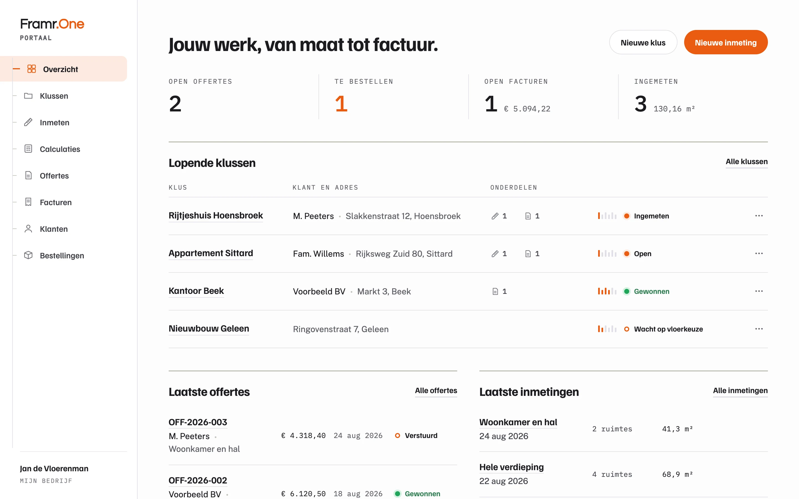
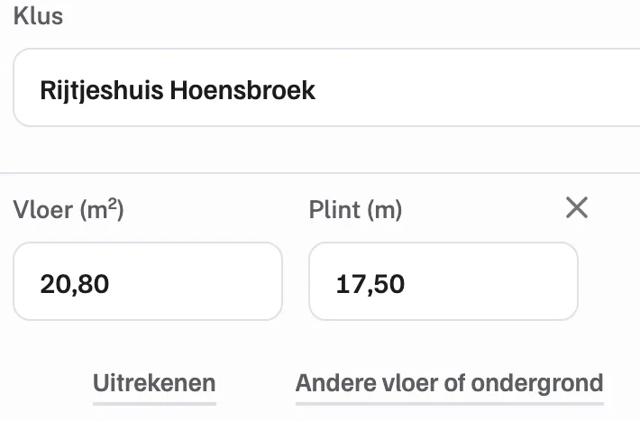
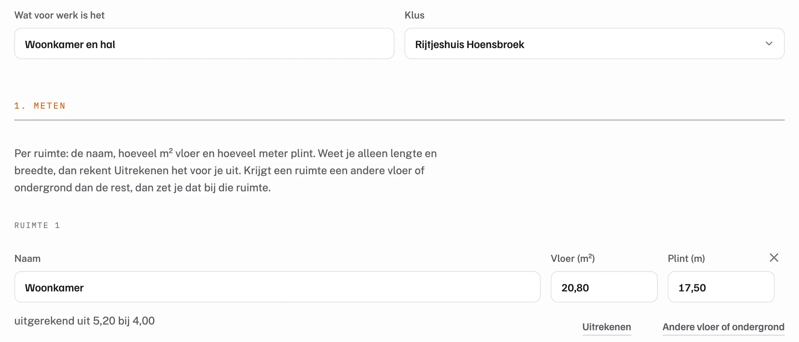
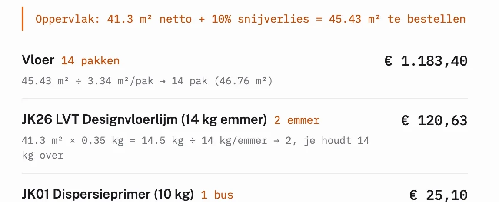
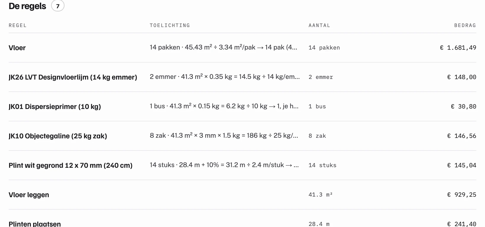
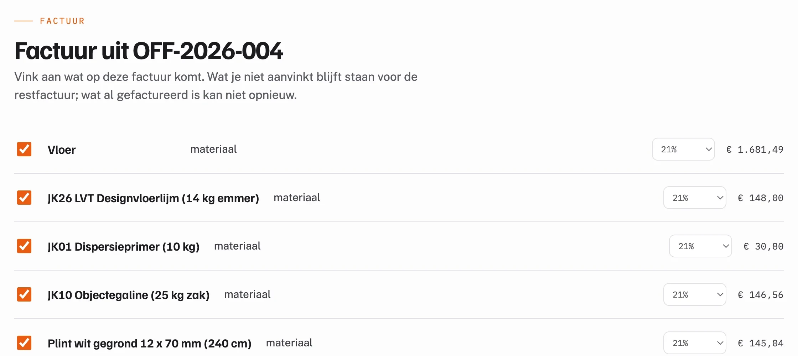
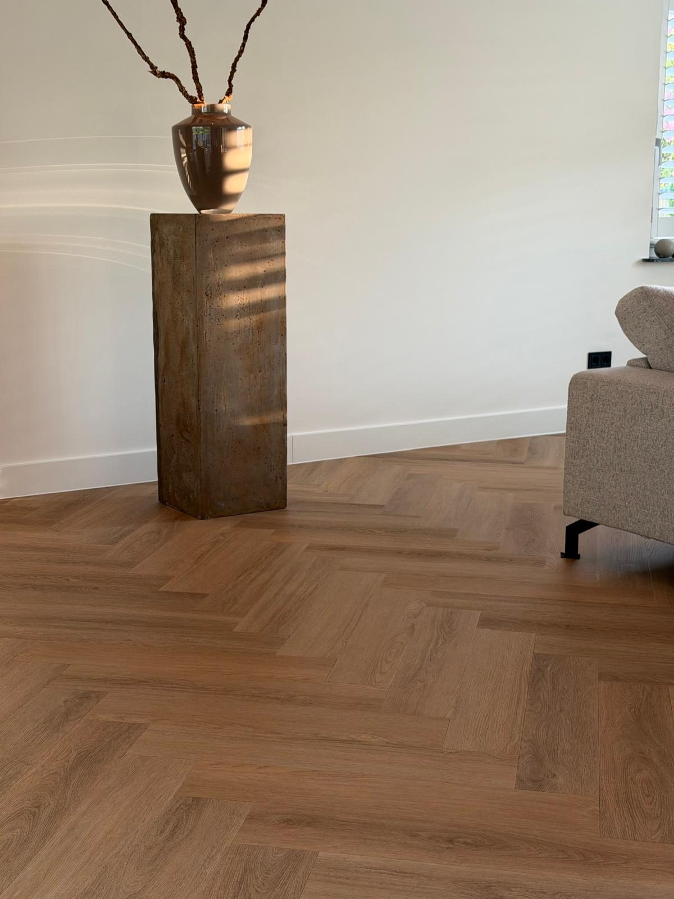

Het werksysteem voor vakbedrijven in de bouw.
Klanten, klussen, offertes en facturen in een omgeving. Met een vakmodule die weet hoe jouw vak inmeet, rekent en bestelt.
- Vloeren beschikbaar
- Kozijnen in ontwikkeling

Een klus, van inmeting tot factuur
Een keer invoeren. Elke volgende stap neemt het over.
Een voorbeeld uit het portaal: Rijtjeshuis Hoensbroek van M. Peeters. Wat je bij de inmeting vastlegt, rekent de calculatie door. De calculatie wordt de offerte en de offerte de factuur. Er wordt niets overgetikt.
-
01
Inmeten
Per ruimte de vloer in m² en de plint in meters. De inmeting hoort meteen bij de klus.
Gaat mee: 41,3 m² vloer


-
02
Calculeren
De calculatie telt het snijverlies op, hier 10 procent, en rekent de pakken, de lijm, de primer, de egaline en de plinten uit.
Gaat mee: 14 pakken en toebehoren

-
03
Offreren
Offerte OFF-2026-004 neemt de regels over en zet je werk erbij, tegen je eigen tarief.
Gaat mee: de zeven regels

-
04
Factureren
De factuur komt uit de offerte. Eerst het materiaal; wat je niet aanvinkt, blijft staan voor de restfactuur.
Gaat mee: de offerteregels

Basis en modules
Een basis voor elk vakbedrijf. Een module voor jouw vak.
Klanten, klussen, offertes en facturen werken voor ieder bouwbedrijf hetzelfde. Wat per vak verschilt, is hoe je inmeet, rekent en bestelt. Dat doet de module, op dezelfde basis.
De basis
Voor ieder vakbedrijf
- Klanten
- Naam, contact en adres op een plek, in elke klus en offerte.
- Klussen
- Een dossier per klus, met de inmetingen, calculaties, offertes en facturen.
- Offertes
- Met je eigen tarieven voor het werk.
- Facturen
- In delen: het materiaal vooraf, het werk na oplevering.
- Documenten
- Offertes en facturen als pdf voor je klant, met je eigen logo en zonder je inkoopprijzen.
Vloeren
Beschikbaar
- Inmeten
- Per ruimte de vloer en de plint. Geef je lengte en breedte, dan rekent het de m² uit.
- Snijverlies
- 10 procent bij recht leggen, 15 bij visgraat.
- Materiaal
- Vloer, lijm, primer, egaline en plint uit de collectie, per klus uitgerekend.
- Bestellen
- De materiaallijst in een keer bestellen bij Oaklyn.
Kozijnen
In ontwikkeling
Nog niet open voor aanmelding.
Wat het kost
Framr.One is gratis. Elke module ook, ook later.
Wij verdienen aan het materiaal dat je via het platform bestelt. Niet aan de software, niet aan een maandbedrag en niet aan een percentage van je werk.
€ 0per maand, voor de basis en voor elke module
Gratis
Nu en later
- De basis: klanten, klussen, offertes, facturen en documenten.
- Elke module, ook de modules die nog komen.
- Geen proefperiode: het blijft gratis.
- Een account is een e-mailadres en een wachtwoord.
Wat je wel betaalt
Alleen als je bestelt
- Het materiaal dat je via het platform bestelt, op je partnerprijs.
- De verzendkosten van die bestelling, in de webshop van Oaklyn.
- Bestellen bij ons is nooit verplicht: het portaal werkt met iedere vloer, ook als je die elders koopt.
Goed om te weten
Wat er wel en niet is
- Het portaal draait in de browser, op je telefoon en op kantoor. Er is niets te installeren.
- Een koppeling met je boekhoudprogramma komt later. Tot die tijd exporteer je facturen als pdf.
Framr.One Vloeren
Partnerprijs in, jouw prijs uit.
Met Vloeren lever je ook de vloer die je legt. Je koopt in op je partnerprijs en bepaalt zelf je verkoopprijs. Het verschil is je brutomarge, op de vloer en op alles wat je erbij levert: lijm, egaline, ondervloer en plinten. Bovenop je legwerk; daar nemen wij geen percentage van.

- Partnerprijzen
- Bij de start Brons. Zilver voor wie regelmatig bestelt, Goud voor wie zijn materiaal structureel via ons haalt. De adviesprijs staat er altijd naast.
- Bestellen
- In het portaal, vanuit de calculatie. De bestelling gaat via Oaklyn naar het magazijn van JOKA.
- Levering
- Vloeren en hulpstoffen uit voorraad in 2 tot 4 werkdagen, op het adres dat jij kiest.
- Assortiment
- Ruim 1.100 artikelen op je partnerprijs, van de ondervloer tot het gereedschap.
Reken uit wat je aan je volgende klus verdient → Alles over Framr.One Vloeren →
Begin met je eerste klus.
Een account is je e-mailadres en een wachtwoord. Of kijk eerst rond in het portaal, zonder account en met voorbeeldgegevens die niet bewaard worden.
Liever eerst even praten?
Bel of mail, dan krijg je een mens aan de lijn.
Voor vakbedrijven in de bouw. Vandaag vooral voor de zelfstandige vloerenlegger en de kleine ploeg.